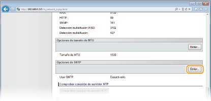
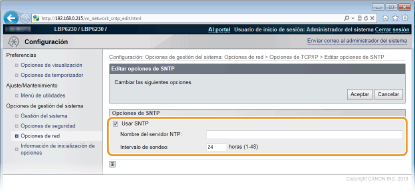
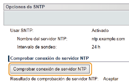

0KXF-02H
 |
Protocolo simple de tiempo de redes (SNTP) le permite ajustar el reloj del sistema utilizando un servidor de tiempo de la red. Si utiliza SNTP, el sistema verifica periódicamente el servidor temporizador, con lo que el reloj del sistema siempre es preciso. La hora se basa en la Hora universal coordinada (UTC), por lo que debe especificar la zona horaria antes de configurar SNTP (Opciones de temporizador).
|
|
|
|
El SNTP del equipo admite servidores NTP (versión 3) y SNTP (versiones 3 y 4).
|
1
Inicie el IU remoto e inicie sesión en modo Administrador del Sistema. Inicio del IU remoto
2
Haga clic en [Configuración].

3
Haga clic en [Opciones de red]  [Opciones de TCP/IP].
[Opciones de TCP/IP].

4
Haga clic en [Editar] en [Opciones de SNTP].

5
Seleccione la casilla de verificación [Usar SNTP] e introduzca la información necesaria.

[Usar SNTP]
Seleccione la casilla de verificación para utilizar SNTP en la sincronización. Si no desea utilizar esta función, desmarque la casilla de verificación.
Seleccione la casilla de verificación para utilizar SNTP en la sincronización. Si no desea utilizar esta función, desmarque la casilla de verificación.
[Nombre del servidor NTP]
Introduzca la dirección IP del servidor NTP o SNTP. Si en la red está disponible un servidor DNS, puede introducir "<nombre de host>.<nombre de dominio>" (FQDN) de hasta 255 caracteres alfanuméricos en su lugar (ejemplo: "ntp.ejemplo.com").
Introduzca la dirección IP del servidor NTP o SNTP. Si en la red está disponible un servidor DNS, puede introducir "<nombre de host>.<nombre de dominio>" (FQDN) de hasta 255 caracteres alfanuméricos en su lugar (ejemplo: "ntp.ejemplo.com").
[Intervalo de sondeo]
Introduzca un intervalo de entre 1 y 48 horas para especificar la frecuencia con que se sondeará el servidor de tiempo.
Introduzca un intervalo de entre 1 y 48 horas para especificar la frecuencia con que se sondeará el servidor de tiempo.
6
Haga clic en [Aceptar].
|
|
|
Prueba de comunicación con el servidor NTP/SNTP
Puede comprobar si el equipo se comunica con el servidor de tiempo registrado. Haga clic en [Configuración]
 |
|
Puede informar al equipo de la hora establecida en su ordenador y sincronizarlo con ella. Configure la información de la hora en la Ventana Estado de la impresora.

|
 en la bandeja del sistema.
en la bandeja del sistema.